Kemi A
kl. 09.00-14.00
Vejledning
Prøven
Opgavesættet består af 4 opgaver med i alt 15 delopgaver.Følgende hjælpemidler forudsættes:
DATABOG fysik kemi (F&K Forlaget), 11. udgave (2007) eller senere udgave.
Opgavebesvarelsen
Din opgavebesvarelse skal afleveres i et samlet dokument, gemt i pdf-format.
Bedømmelse
Ved den skriftlige prøve lægges der vægt på din evne til at:
| - | anvende fagets viden og metoder til behandling af kemiske problemstillinger | |
| - | gøre iagttagelser og analysere eksperimentelt arbejde, samt efterbehandle og vurdere resultater herfra | |
| - | gennemføre og præsentere relevante beregninger med korrekt brug af fagsprog | |
| - | benytte relevante matematiske modeller, metoder og repræsentationsformer | |
| - | benytte fagspecifikke digitale værktøjer hensigtsmæssigt | |
| - | dokumentere anvendte informationer fra forskellige kilder | |
| - | udtrykke sig skriftligt, således at tankegangen fremstår struktureret og tydelig. |
Opgave 1: Soltørring af vasketøj
|
Duften af frisktørret vasketøj kender de fleste. Men hvorfor dufter især vasketøj, som er tørret i solskin? Det har danske forskere undersøgt. De opdagede, at der i vasketøj, som blev udsat for sollys, blev dannet stoffer, som er kendt for deres friske blomsterdufte.
I figur 1.1 ses et af de stoffer, som blev dannet i vasketøjet under tørring i sollys. |
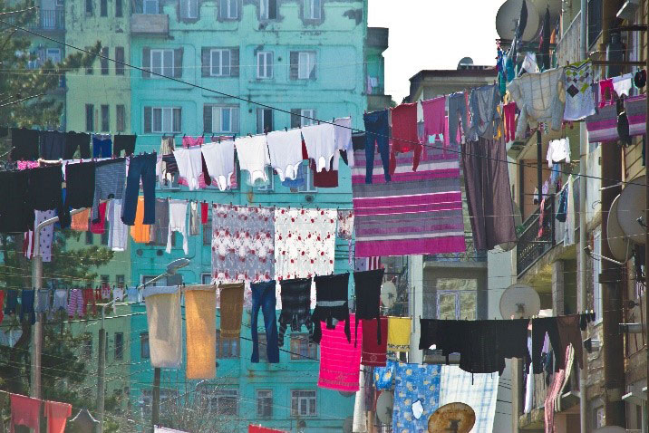 |
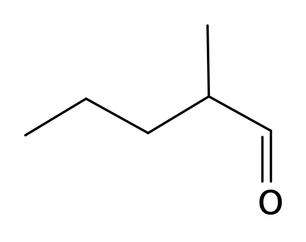
A
dufter af frugt
dufter af frugt
Figur 1.1
MarvinSketchfil Figur 1.1 ChemSketchfil Figur 1.1
| a) | Tegn en strukturisomer til stof A, der ikke udviser spejlbilledisomeri. |
I figur 1.2 vises strukturer og dufte for fire af de stoffer, der afgives fra det soltørrede vasketøj.
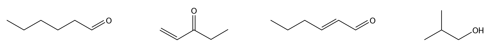
|
B
græs |
C
peber |
D
sød mandel |
E
vin |
Figur 1.2
MarvinSketchfil Figur 1.2 ChemSketchfil Figur 1.2
Duftstofferne i figur 1.2 er fordelt i fire glas, 1, 2, 3 og 4, med et duftstof i hvert glas. Der gennemføres kemiske tests på stofferne som vist i filmen nedenfor.
Kemiske tests
I figur 1.3 og 1.4 ses IR-spektre af to af duftstofferne i figur 1.2.
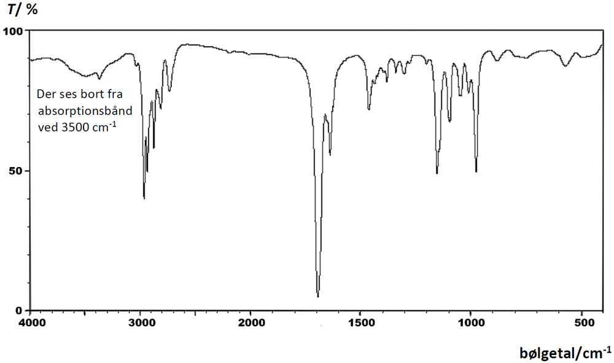
Figur 1.3
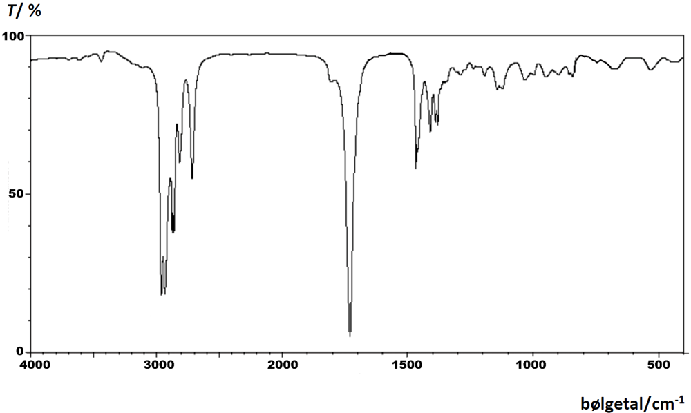
Figur 1.4
| b) |
Argumenter for, hvordan to af stofferne kan tilordnes reagensglas alene på baggrund af de kemiske tests.
Gør rede for, hvordan IR-spektrene i figur 1.3 og i figur 1.4 kan tilordnes de to resterende stoffer. Inddrag kun absorptionsbånd over 1500 cm-1. |
Et andet duftstof, F, som dannes under soltørring, er et aldehyd, der dufter af frugt. I tabel 1.1 ses resultatet af stoffets elementaranalyse, angivet som masseprocenter.
Tabel 1.1
| C | H | O |
| 69,72 % | 11,70 % | 18,57 % |
I figur 1.5 ses 1H-NMR-spektret for stof F. Spektrometerfrekvensen er 200 MHz.
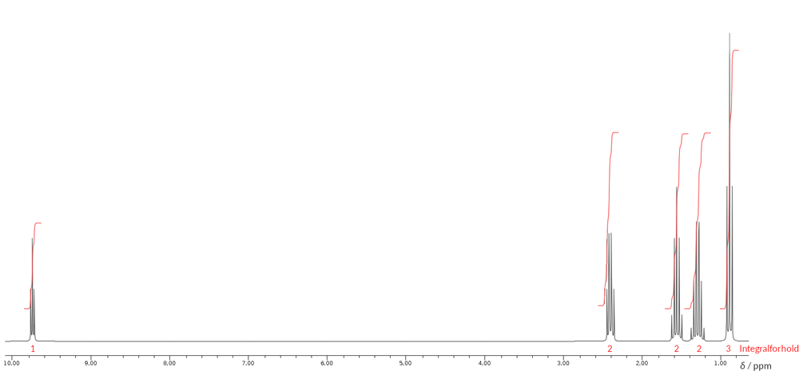
Figur 1.5
| c) | Bestem strukturen for F. Argumenter ud fra elementaranalysen og 1H-NMR-spektret. Integralkurver, kemiske skift og koblingsmønstre inddrages i analysen af spektret, idet signaler tilordnes stoffets strukturformel. |
Opgave 2: Brilliant blue - det blå farvestof i fødevarer
|
Brilliant blue er et syntetisk farvestof, der blandt andet anvendes til at farve fødevarer og lægemidler. I EU må der tilsættes op til 100 mg/L læskedrik. Brilliant blue har E-nummer E133.
Strukturformel for natriumsaltet af brilliant blue er vist i figur 2.1. |
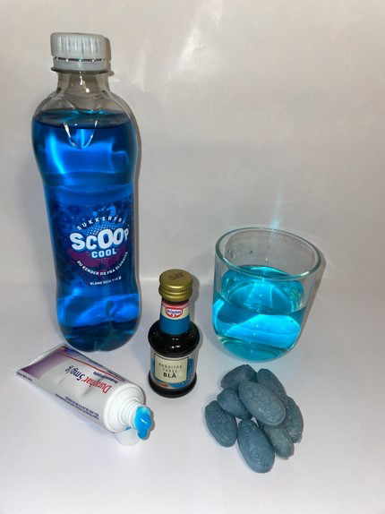 |
M = 792,85 g/mol
Figur 2.1
En elev fremstiller en stamopløsning af brilliant blue ved først at overføre 0,397 g brilliant blue til en 500 mL målekolbe. Krystallerne opløses i vand, og der fyldes op til stregen med vand.
| a) | Beregn stofmængdekoncentrationen af brilliant blue i stamopløsningen. |
Eleven gennemfører en spektrofotometrisk analyse af brilliant blue, som vist i filmen nedenfor.
Lambert-Beers lov
Excelfil spektrofotometriske data - Lambert-Beers lov
| b) |
Angiv funktionsudtrykket for absorbansen som funktion af koncentrationen af brilliant blue ved bølgelængden 629,9 nm.
Argumenter for, at absorbansen følger Lambert-Beers lov. |
Når en opløsning af brilliant blue tilsættes hypochlorit, ClO-, affarves opløsningen, idet brilliant blue omdannes til farveløse forbindelser.
En elev ønsker at bestemme reaktionsordenen med hensyn til brilliant blue ved en spektrofotometrisk undersøgelse. Hypochlorit tilsættes i så stort overskud, at koncentrationen af hypochlorit betragtes som værende konstant under affarvningen.
Hypochlorit er en base med pKb 6,46 ved 25 °C.
| c) | Beregn pH i en vandig opløsning af hypochlorit med koncentrationen 0,085 m ved 25 °C. |
Ved den spektrofotometriske undersøgelse af affarvningen af brilliant blue måles absorbansen ved bølgelængden 629,9 nm som funktion af tiden. Undersøgelsen gennemføres som vist i filmen nedenfor
Spektrofotometrisk undersøgelse af reaktionsorden
Datafilen fra den spektrofotometriske undersøgelse angiver data i tidsintervallet fra reaktionsblandingen overføres til kuvetten til 50 s efter overførslen.
Excelfil spektrofotometrisk undersøgelse af reaktionsorden
| d) |
Vis, at reaktionen med hensyn til brilliant blue ved affarvningen er af første orden i den spektrofotometriske undersøgelse.
Bestem koncentrationen af brilliant blue til tiden 60 s efter opløsningen overføres til kuvetten. |
Affarvningen af brilliant blue er undersøgt ved forskellige temperaturer. Resultaterne er vist i tabel 2.1.
Tabel 2.1
| T / °C | 17 | 35 |
| k / s-1 | 0,0338 | 0,151 |
| e) |
Beregn aktiveringsenergien for affarvningen af brilliant blue.
Beregn halveringstiden for affarvningen af brilliant blue ved 30 °C. |
Opgave 3: Medicinsk abort
|
I Danmark har kvinder ret til selv at bestemme, om de vil gennemføre en graviditet eller afbryde den inden udgangen af graviditetens 12. uge.
Ved medicinsk abort indtages stoffet mifepriston, som stopper graviditetens udvikling og bidrager til, at livmoderen udstøder det befrugtede æg. Desuden indtages stoffet misoprostol, som giver sammentrækninger af livmoderen. |
Misoprostol affarver bromvand. Reaktionsskemaet ses i figur 3.1
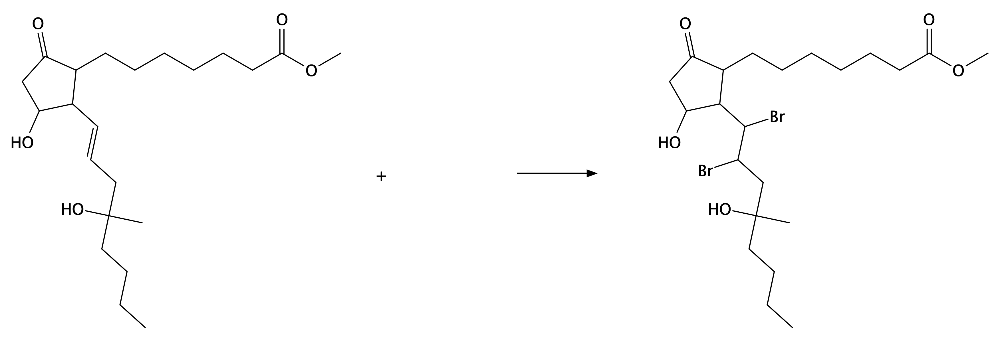
Figur 3.1
MarvinSketchfil Figur 3.1 ChemSketchfil Figur 3.1
| a) |
Færdiggør reaktionsskemaet i figur 3.1.
Angiv reaktionstype. Begrund ud fra reaktionsskemaet. |
I figur 3.2 ses strukturen af mifepriston
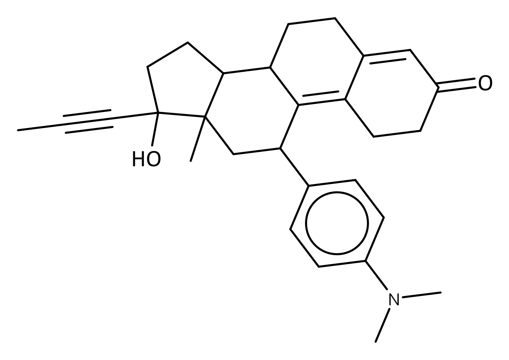
mifepriston
Figur 3.2
Mifepriston virker ved at blokere en progesteronreceptor. Derfor kan progesteron ikke binde sig til receptoren, så naturlig signalering forhindres. Receptoren er et protein med en bindingslomme. I figur 3.3 ses bindingslommen og mifepristons placering i lommen. Sidegrupperne i proteinets aminosyreenheder i bindingslommen er tegnet blå.
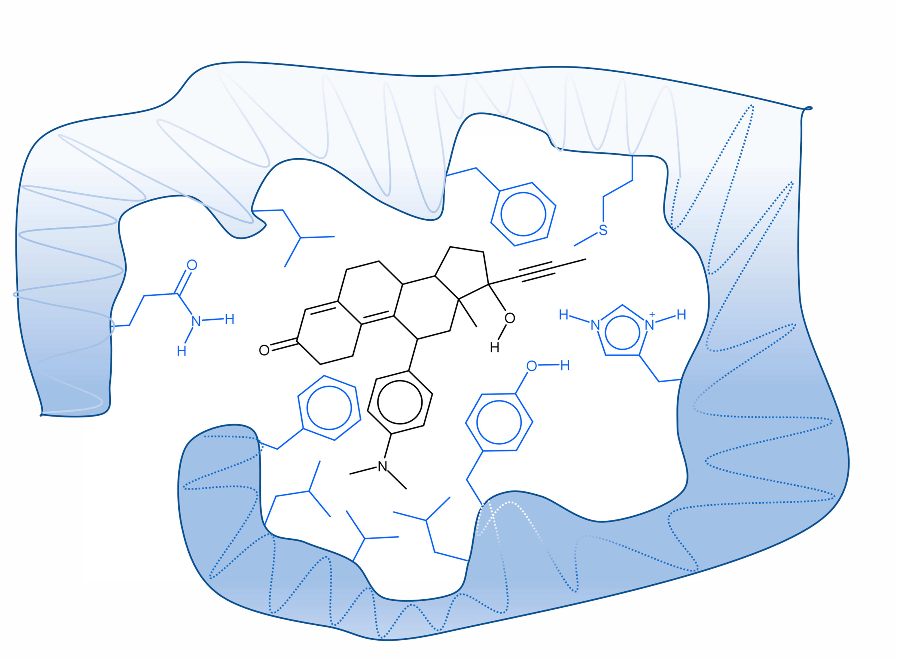
Figur 3.3
Mifepriston fastholdes i bindingslommen ved såvel hydrofobe vekselvirkninger som hydrogenbindinger mellem mifepristonmolekylet og aminosyreenhederne i proteinets bindingslomme.
| b) | Marker hydrofobe vekselvirkninger og hydrogenbindinger mellem mifepristonmolekylet og bindingslommen. |
Piller, der indeholder både mifepriston og misoprostol, kan analyseres ved HPLC. Princippet i HPLC-analysen er, at en lille portion af en prøve føres igennem en kolonne af en væske under tryk. Kolonnen er således den stationære fase, og væsken er den mobile fase. Molekylerne kommer ud af kolonnen til forskellige tider, kaldet retentionstider. Der udskrives et chromatogram, hvor retentionstiden er angivet på 1. aksen.
I figur 3.4 ses chromatogrammet fra analysen af pillerne. Den anvendte kolonne er upolær, mens den mobile fase er en vandig opløsning med pH 7.
Figur 3.4
I figur 3.5 ses mifepristons og misoprostols strukturer og pKs-værdien for mifepriston. Misoprostol har ingen syre-baseegenskaber.
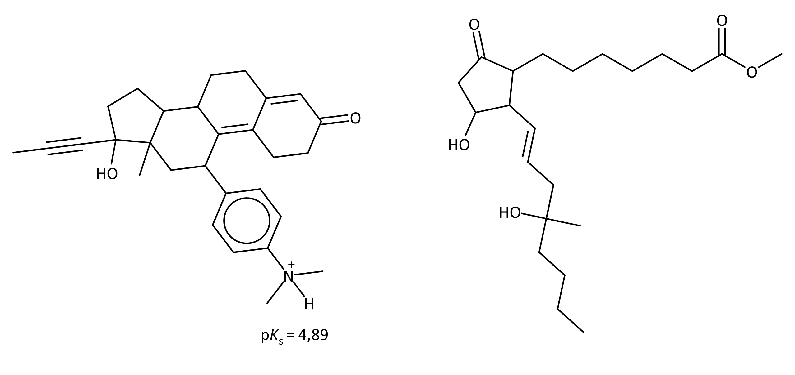
| mifepriston | misoprostol |
Figur 3.5
MarvinSketchfil Figur 3.5 ChemSketchfil Figur 3.5
| c) | Forklar, hvorfor misoprostol har kortere retentionstid end mifepriston ved HPLC-analysen. Inddrag stoffernes struktur og syre-baseegenskaber. |
Opgave 4: Borhydrider - vigtige industrielle reduktionsmidler
|
Borhydrider er reduktionsmidler, som anvendes i stor skala i industrien. Der forbruges fx mere end 1000 ton natriumborhydrid, NaBH4, årligt.
Diboran, B2H6, reagerer stærkt varmeudviklende med dioxygen og har været undersøgt som muligt raketbrændstof. I dag anvendes diboran til reduktion af carboxylsyrer til alkoholer. |
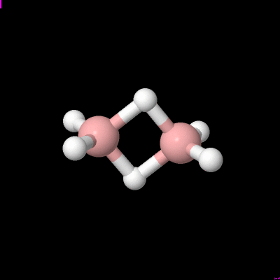 Model af diboranmolekylet |
En lukket tom beholder tilføres 0,00308 mol diboran. Beholderens volumen er 100 mL og temperaturen er 75 °C.
| a) | Beregn det tryk diboran udøver i beholderen. |
Beholderen tilføres carbonmonoxid, og ligevægten vist i figur 4.1 indstiller sig.
B2H6(g) + 2 CO(g) ⇌ 2 BH3CO(g)
Figur 4.1
Tilvæksten i entropi ved standardtilstand for reaktionen i figur 4.1 er
ΔS° = -136
Jmol · K
| b) |
Kommenter ΔS° i forhold til reaktionsskemaet i figur 4.1.
Beregn S°(BH3CO(g)). |
ΔG° for reaktionen i figur 4.1 er bestemt ved forskellige temperaturer. Sammenhængen er vist i figur 4.2.
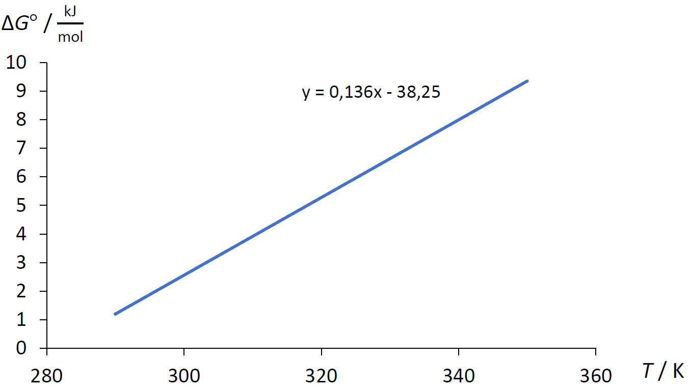
Figur 4.2
| c) |
Angiv reaktionsbrøken for ligevægten i figur 4.1.
Beregn ligevægtskonstanten ved 80 °C med udgangspunkt i figur 4.2. |
Når ligevægten indstilles ved 75 °C er partialtrykkene
p(B2H6) = 0,641 bar
p(CO) = 3,01 bar
p(BH3CO) = 0,501 bar
p(CO) = 3,01 bar
p(BH3CO) = 0,501 bar
Den lukkede beholder nedkøles til 30 °C. Ligevægtskonstanten ved 30 °C er 0,307 bar-1.
| d) |
Redegør for, at ligevægten forskydes mod højre, når temperaturen sænkes fra 75 °C til 30 °C.
Beregn partialtrykket af diboran, når ligevægten har indstillet sig ved 30 °C. |
Filer til opgaverne
| Filnavn | Opgave | Figur | Beskrivelse |
| 194096_figur1_1.mrv | 1 | 1.1 | MarvinSketch fil med strukturformel |
| 194096_figur1_1.sk2 | 1 | 1.1 | ChemSketch fil med strukturformel |
| 194096_figur1_2.mrv | 1 | 1.2 | MarvinSketch fil med strukturformel |
| 194096_figur1_2.sk2 | 1 | 1.2 | ChemSketch fil med strukturformel |
| 194096_opg2_excel.xlsx | 2 | - | Excel datafil |
| 194096_opg2_excel2.xlsx | 2 | - | Excel datafil |
| 194096_figur3_1.mrv | 3 | 3.1 | MarvinSketch fil med strukturformel |
| 194096_figur3_1.sk2 | 3 | 3.1 | ChemSketch fil med strukturformel |
| 194096_figur3_5.mrv | 3 | 3.5 | MarvinSketch fil med strukturformel |
| 194096_figur3_5.sk2 | 3 | 3.5 | ChemSketch fil med strukturformel |
Klik her for at downloade alle filer.
Kildeliste
Opgave 1
Colourbox
Opgave 2
Opgavekommissionen
Opgave 3
Colourbox
Opgave 4
Opgavekommissionen